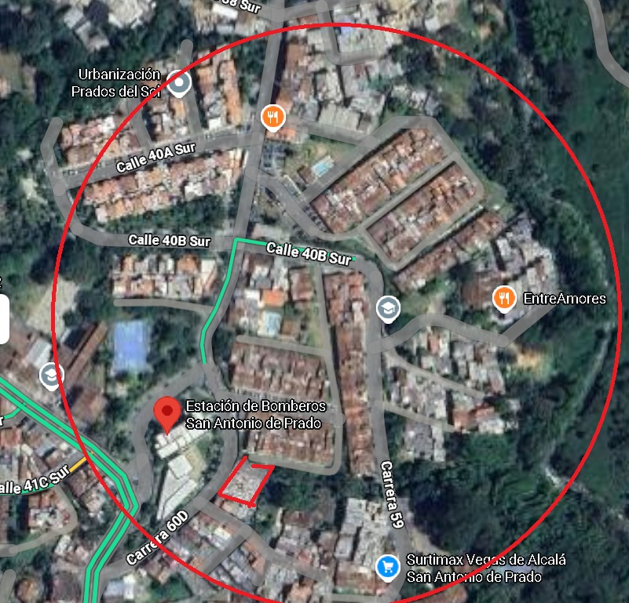
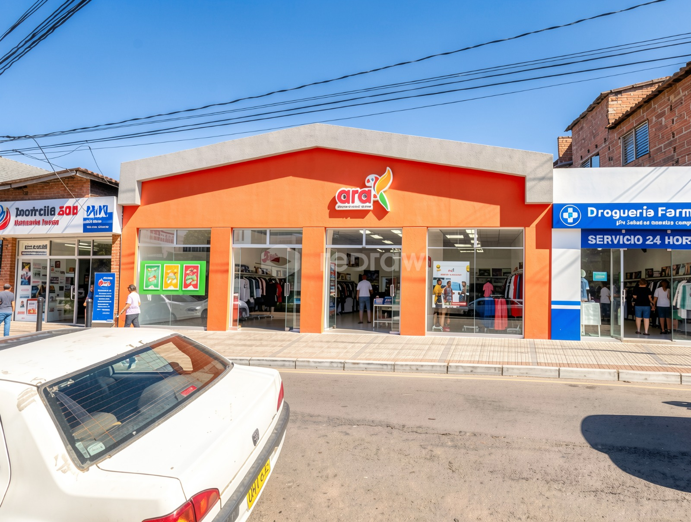
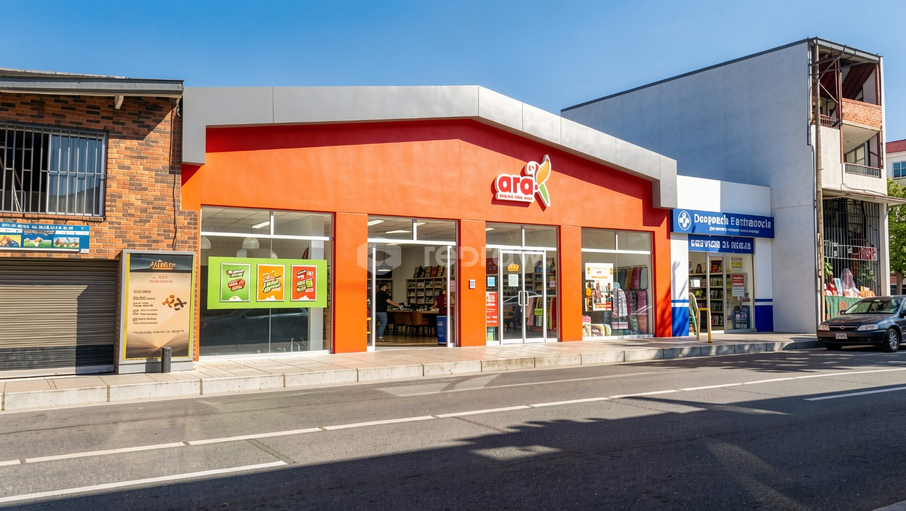
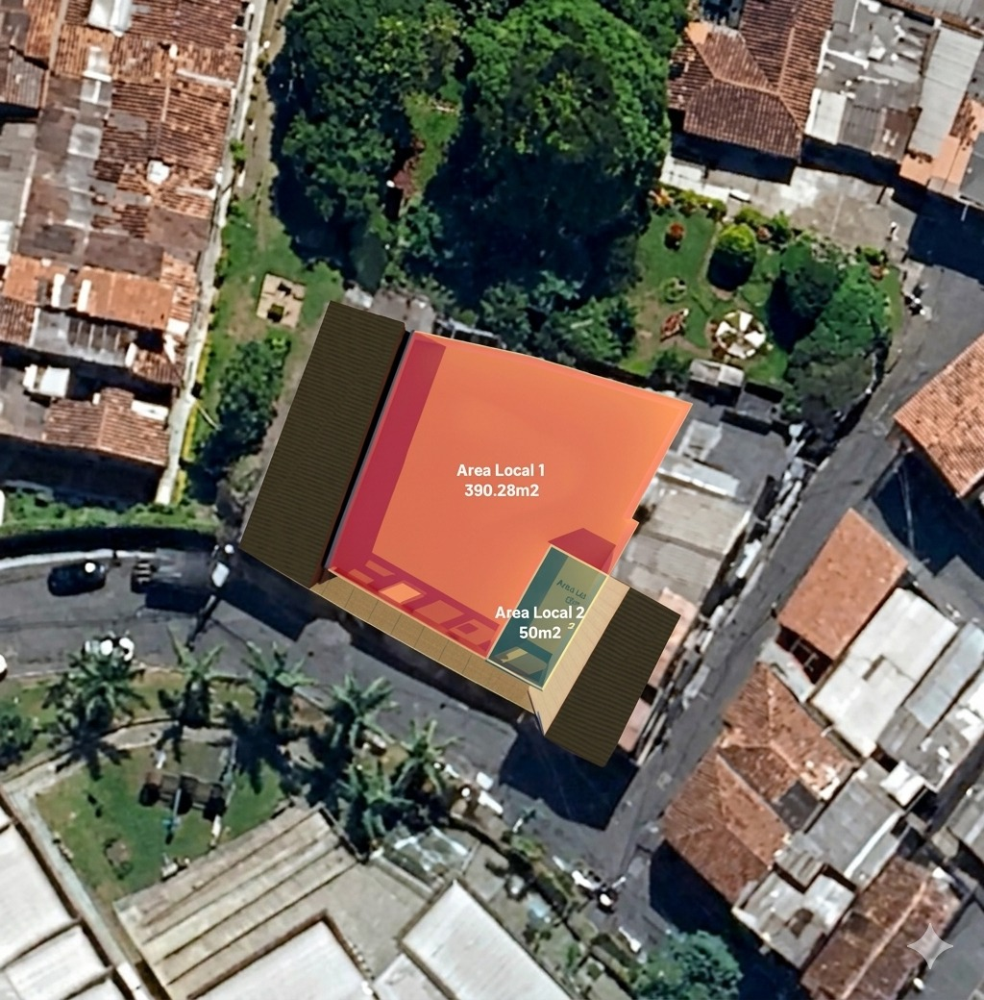
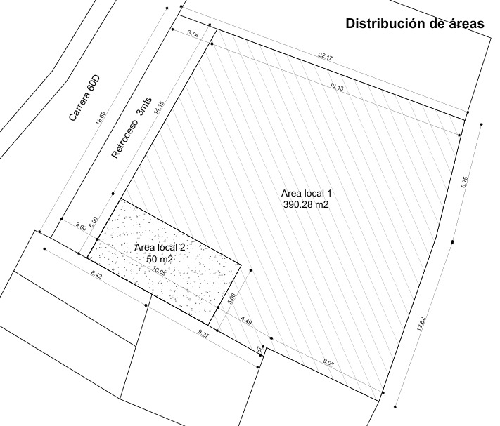

Desarrollo Built-to-Suit de 390,28 m² sobre lote consolidado en Barrio Pradito, sector Estación de Bomberos — un nodo urbano con demanda estructural no atendida y perfil socioeconómico alineado al formato hard discount.
Propuesta integral para apertura de tienda Ara bajo esquema de desarrollo a la medida, sobre lote consolidado con viabilidad normativa inmediata, contrato de largo plazo y demanda estructural verificable en el área de influencia.
San Antonio de Prado es uno de los corregimientos de mayor crecimiento poblacional del suroccidente de Medellín. El sector Pradito concentra hogares jóvenes de estratos 2 y 3 — el cliente core del formato Ara — en un entorno dominado por comercio fragmentado e informal, sin presencia estructurada de cadenas hard discount comparables.
Alta densidad poblacional con predominancia de familias jóvenes y patrón de consumo diario de conveniencia. El tráfico es recurrente, no estacional, y la rotación de tique esperada está alineada al modelo operativo de Ara.
La oferta actual está concentrada en comercio fragmentado e informal. La baja penetración de formatos organizados representa una ventaja competitiva estructural para el primer operador en entrar con oferta estandarizada y precio.
Zona en expansión activa con desarrollo de vivienda VIS y proyecciones de mejoras en conectividad e infraestructura de transporte. La entrada al mercado se anticipa al pico de valorización — ventaja de primer movedor en un nodo consolidado.
Alto flujo peatonal, consumo de conveniencia, sensibilidad al precio y potencial de fidelización: todos los atributos que definen un punto de caja diaria para hard discount se verifican en el área de influencia primaria.
La localización se ancla en la Estación de Bomberos de San Antonio de Prado — un hito urbano de referencia directa — sobre la Carrera 60D, vía de conexión entre zonas residenciales consolidadas y corredores de transporte local.

Punto de paso obligado sobre la malla residencial consolidada del corregimiento, con acceso directo a corredores de transporte público, flujo residencial permanente y proximidad inmediata a equipamientos de servicios básicos.
La posición adyacente a la Estación de Bomberos aporta un landmark urbano natural que opera como referencia de localización y refuerza el reconocimiento de marca desde el primer día de operación.
Tráfico peatonal diario directo · flujo residencial de conveniencia.
Captación de mercado recurrente sobre malla residencial consolidada.
Base demográfica ampliada del corregimiento · tráfico motorizado ocasional.
El predio se ubica en un polígono de tratamiento que permite uso mixto con componente comercial, lo que habilita el desarrollo del local Built-to-Suit sin procesos normativos de excepción, con trámite de licencia de construcción por vía ordinaria.
Se presentan renders arquitectónicos preliminares, distribución de áreas en planta e implantación aérea sobre el lote. El proyecto contempla un local principal de 390,28 m² destinado a Tienda Ara y un local secundario de 50 m² destinado a operador farmacéutico (Droguería Farmanorte).




Cifras tomadas del plano arquitectónico de distribución de áreas, verificables en visita técnica.
Capital Integral aporta el lote consolidado listo para construcción. Tiendas Ara ejecuta la obra civil según su propio estándar técnico y operativo, sobre un contrato de largo plazo con canon fijo ajustado por IPC.
Capital Integral aporta el lote consolidado sobre el cual Tiendas Ara desarrolla directamente la obra civil bajo su propio estándar operativo, diseño de marca y cronograma de expansión. El canon aplica sobre el lote arrendado.
Superficie de 390,28 m² con frente comercial sobre vía pública, sin columnas críticas y con capacidad de adaptar circulación, caja, bodega y zona de recibo según el estándar operativo de Ara.
Local adicional de 50 m² destinado a Droguería Farmanorte como operador complementario. Genera sinergia de tráfico y refuerza el posicionamiento del punto como nodo de conveniencia del sector.
Estructura alineada a los estándares de contratación institucional de Tiendas Ara en formato hard discount — canon fijo, vigencia de largo plazo y ajuste por IPC.
Condiciones sujetas a confirmación de especificaciones técnicas finales y firma de carta de intención. El canon aplica sobre el lote arrendado de 497 m², sobre el cual Tiendas Ara desarrolla directamente la obra civil.
Seis tesis estratégicas que sustentan la entrada de Ara al sector Pradito como un movimiento defendible frente a la competencia futura y alineado con el plan de expansión territorial de Jerónimo Martins en Antioquia.
La ausencia de cadenas hard discount organizadas en el polígono primario permite capturar demanda estructural sin canibalización de tráfico existente ni guerra de precio con operadores equivalentes.
La entrada anticipada al nodo Pradito establece un posicionamiento defendible. La siguiente cadena comparable deberá competir con una marca ya instalada, con fidelización construida y economías de tráfico.
El perfil socioeconómico 2–3 y la tipología de consumo recurrente de conveniencia generan un patrón de caja diaria — no aspiracional — con rotación de tique alineada al modelo operativo del formato Ara.
Lote consolidado, uso comercial compatible con el POT vigente, licenciamiento por vía ordinaria y esquema Built-to-Suit: tres capas independientes de mitigación del riesgo de ejecución.
La presencia de Droguería Farmanorte como ancla complementaria refuerza el concepto de nodo de conveniencia, genera tráfico cruzado y consolida el punto como destino comercial del sector.
San Antonio de Prado es un corregimiento en expansión demográfica activa. Una apertura exitosa en Pradito establece precedente operativo y cobertura geográfica para futuras aperturas en el corregimiento.
Ponemos a disposición del equipo de expansión de Tiendas Ara toda la información técnica, normativa y comercial del activo para una evaluación formal. Sugerimos una visita de reconocimiento en sitio acompañada por el equipo de Capital Integral Investments.
Agendar visita técnica